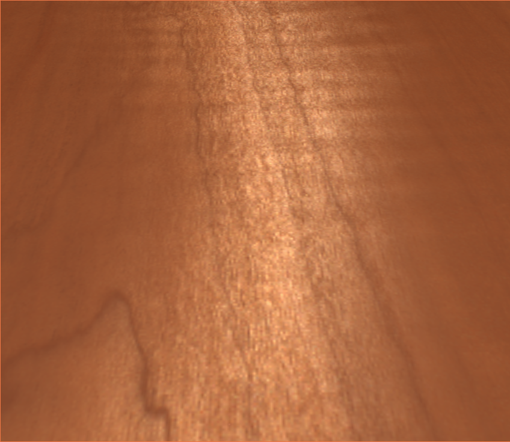
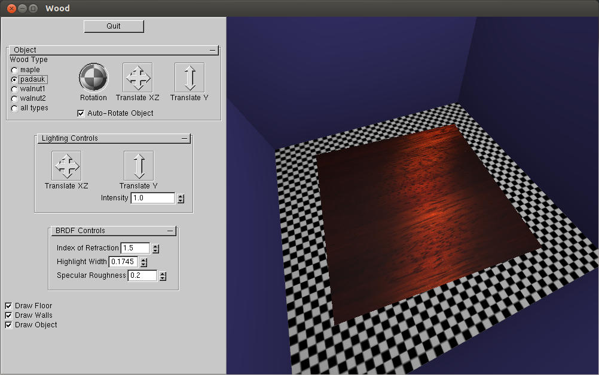

by Sean McKenna

The original paper established a new sub-surface reflection component to the bidirectional reflectance distribution function (BRDF) that created a sub-surface highlight distinct to the appearance of actual, finished wood. The key features of this process include identifying the direction and angle of the sub-surface wooden fibers, refracating and reflecting the incoming light ray along this angled wooden fiber, and producing a Gaussian-spread along a cone in the direction of this angled reflection ray. All of these features were coded in this project to emulate the work done by Marschner et al. A sample, rendered image of tiger wood is presented below.
The BRDF has been coded into the wood shaders (wood.frag & wood.vert). The main code for the BRDF is in wood.frag. It is based on the Renderman shader that the original authors used to produce their final images. The bulk of this project was understanding the Renderman code and writing the same shader from scratch in GLSL.
All the shader code matches the equations presented in Section 4 of their paper, the "Shading Model for Wood." This method specifically applies to the sub-surface reflection of finished wood, where light refracts and reflects off the internal wood fibers. The surface reflection, like in the original paper, has been implemented using a simple Phong model. Together, these two pieces (surface & sub-surface reflection) are the fundamental components of the BRDF.
Writing the shader code for the sub-surface reflection proved to be quite the challenge. Unlike other more robust shader languages, GLSL requires more manual work. For example, the fresnel function exists in the Renderman language, but that is not the case for GLSL. Reading a white paper by Nvidia, referenced within the code, the fresnel function was implemented, at least up until the fresnel factor. Then, the GLSL method refract() was used to alter the light rays (or vectors) accordingly. It took a lot of debugging and testing to get just the fresnel function working correctly. Lastly, a good deal of comments were sprinkled throughout the code to both aid myself in writing the shader to make sure all components were done in their proper order, and also for hopefully future use when I publish this code online.
Interestingly, the implementation of the shader used by the original authors for the rendered images in the paper was "wrong." I emailed the first author on the paper (Dr. Marschner at Cornell University), and pointed out an error in a piece of code they had used for the normalized Gaussian distribution. The problem was multiplying their Gaussian by the beta factor, instead of dividing. He stated in his email that the only real, resulting difference was a change in one of the other variables for generating the highlighted surface, but nonetheless, I have fixed this normalized Gaussian distribution in my shader implementation (wood.frag, line 152). I was not exactly sure which variable he said it would need to change, but that could explain some differences in the renders generated from my program. Below, a rendered image from the original paper appears, and you can hover over it to replace it with the same piece of wood rendered using my shader code. The original author's image of this wood (walnut) is significantly different since it is more grainy (best quality I could find from their videos) and appears slightly lighter / less contrast than my rendered wood.
The GUI is the basic window and environment used in all other assignments for this course, as in the image below (the wood is padauk here). The object is a simple, thin "slab" of wood. The object can be moved, deactivated, and textures can be changed. There is a choice between any (or all) of the following wood types: maple, padauk, walnut1, and walnut2. These textures and input data come straight from the original authors' published data. By default, the wooden slab rotates about the scene, but this can be toggled off as well.
The light and camera can both be moved as in previous assignments. Moving the light or rotating the camera will show how the sub-surface reflected highlight moves on the wooden surface, as can be seen in the images on this page. The keyboard button 'w' will toggle the wood shading model and textures off and on. A regular Phong shader is used for the rest of the scene and to mimic a surface reflection highlight on the wood as well, as the original authors also did.
Additionally, several key variables using in the BRDF have been added as adjustable variables in the GUI. First, the index of refraction, can adjust the angle of refracation caused by the light traveling through the wood sub-surface, default set to 1.5. Interestingly, this variable does not have a large change in the actual render output (from afar). The width of the sub-surface highlight can also be adjusted, which very obviously gets smaller or larger with the size of that variable. Lastly, the specular roughness is one of the factors used for the Gaussian distribution, so light gets more spread out along the surface as this value increases (though the change is not too large).
There are several more steps that would have been nice to complete, given more time. One thing that proved to be quite difficult was emulating the rendered images from the original papers. The fact is, this requires basically copying the same lighting parameters, shader code, etc. that would make this near impossible to fully achieve. Some of these features could have been better simulated by adjusting lighting and color material parameters for similar blending, but, since the authors used Renderman for their rendered images, it was the best that could be done in reasonable time using OpenGL. Going beyond even the work in the original paper, the actual surface reflection highlight could have been more appropriately modeled into the BRDF. Lastly, it would have been neat to compare rendered images of wood to other real images of wood in a similar environment, again in an attempt to validate the efficacy of the realism of this BRDF model. This would not have been as exact or precise as the measurements presented by the original authors. Instead, it would have been more of a proof-of-concept validation.
Measuring and Modeling the Appearance of Finished Wood
Stephen R. Marschner, Stephen H. Westin, Adam Arbree, and Jonathan T. Moon
in Proceedings of SIGGRAPH 2005
held in Los Angeles, California, July 2005